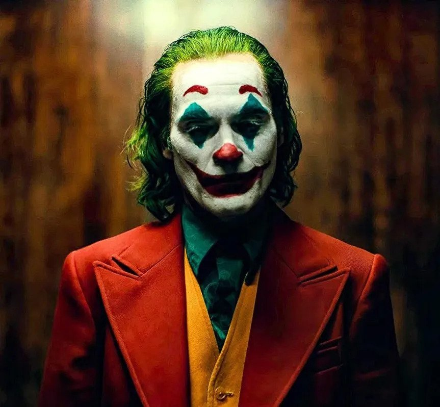
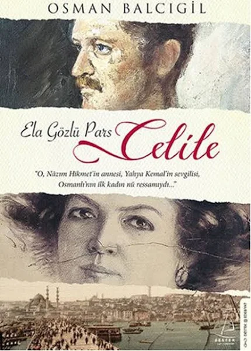

Mehmet Alp ARSLAN
Hakkımda
Merhaba ben Mehmet Alp Arslan İstanbul da yaşıyorum. Roman ve Distopya okumayı severim.
Yazılım ile ilgileniyorum. Kodluyoruz un bu eğitim serisi ile bir çok şey öğrendim ve öğrenmeye devam ediyorum.
İlgi Alanlarım
- Film
- Dizi
- Kitap
- Dağ Adamı
- Yere Yakın Yıldızlara Uzak
- Zamir
- Sol Ayağım
- Mimar Sinan'ın Kayıp Kafatası
- Kumarbaz
- Ay'da İlk İnsanlar
- Celile:Ela Gözlü Pars
Joker

Joker, aynı isimdeki DC Comics karakterine dayanan, Todd Phillips'in yönettiği, başrollerini Joaquin Phoenix,
Robert De Niro, Frances Conroy, Brett Cullen ve Zazie Beetz'ın paylaştığı Amerikan psikolojik gerilim filmidir.
76. Venedik Uluslararası Film Festivali'nde Altın Aslan ödülünü kazanmıştır.
Saygı

Saygı, ilk bölümü 27 Ekim 2020 tarihinde yayınlanan, yapımcılığını BluTV ve Inter Medya'nın yaptığı, birinci sezonun yönetmen koltuğuna
Ali Taner Baltacı'nın, ikinci sezonun yönetmen koltuğunda ise Ender Mıhlar’ın oturduğu, senaryosunu Ercan Mehmet Erdem'in kaleme aldığı
polisiye, suç ve dram türündeki Türk yapımı internet dizisi. Behzat Ç. Bir Ankara Polisiyesi'nin spin-off'udur.
Başrollerde Nejat İşler, Miray Daner ve Boran Kuzum yer almıştır.
Celile:Ela Gözlü Pars

Osmanlı'nın en güzel kadınlarındandı. Saray ressamı Fausto Zonaro'nun rahleyi tedrisinden geçti. Paris ve Roma'da eğitim gördü.
Adını resim sanatına altın harflerle yazdırdı. Padişah hafiyeleriyle, Balkan çetecileriyle, İttihat ve Terakkicilerle boğuştu... Korku nedir hiç bilmedi!
Gönlünü kendinden dört yaş küçük olan Yahya Kemal'e kaptırdığında evliydi, iki çocuğu vardı. "Ela gözlü pars" diye şiirler yazdı ünlü şair onun için.
Güzel kadın, hayatında ilk kez bulutların üzerinde uçtuğunu düşündü. Aşkı uğruna eşini, evini terk etti! Maalesef, onu taşıyabilecek büyüklükte bir yüreğe sahip değildi şair.
Onu yarı yolda bıraktı, sıvışıp kaçtı. Çok üzüldü, kahroldu ama yıkılmadı ela gözlü pars. Aynı çocuk iki kere doğurulabilir mi? Doğurdu Celile!
Oğlu Nâzım Hikmet yirmi sekiz yıllık hapis cezasının on ikinci yılında ölüm orucuna başlayınca, bir panter gibi ileri atıldı ve büyük şairi, ölümün kıyısından
çekip aldı. Bir solukta okuyacaksınız. Tıpkı öteki Osman Balcıgil romanlarını okuduğunuz gibi...